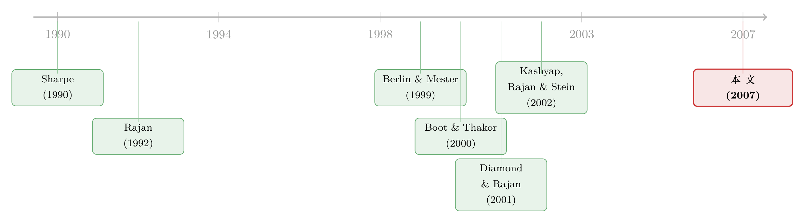

最黏的存款，配最看不清的贷款——一道被「分歧」逼出来的资产负债匹配题
本文读的是 Song & Thakor (2007, Review of Financial Studies)：银行最看不清、也最难脱手的关系型贷款，恰恰要用最容易被挤兑的活期存款来养——这看似自相矛盾，作者却证明它是最优解。原因在于「核心存款 (core deposits)」因为流动性服务而变得「黏」，提款冲动最低；把最高附加值的负债配给最高附加值的资产，银行同时做到了两件事：把脆弱性压到最低，把关系贷款的价值做到最大。
1 一个让人别扭的事实
先说一个银行学里几乎人人都知道、却很少有人追问的别扭事实。
银行天生脆弱。这份脆弱来自它的负债端：它用活期存款 (demand deposits) 给自己融资，而活期存款随时可以被取走 [Diamond and Rajan (2001)]。一旦储户对银行资产的价值起了疑心，提款就会发生，银行被迫贱卖资产甚至关门。这是银行业最古老的恐惧——Bagehot 在《伦巴第街》里早就写过：「我们已经完全忘了，一桩本来会赚钱、也看得出会赚钱的生意，竟会因为缺钱而垮掉。」
那么，一个再自然不过的念头是：既然脆弱来自活期存款，为什么不让靠活期存款融资的银行去投那些信息透明、随时能卖掉的资产（交易性贷款、可流通证券）？反过来，既然「关系型贷款 (relationship lending)」是高附加值、却又信息不透明的活计，为什么不交给那些不靠活期存款、因而天生不脆弱的机构去做？
可现实偏偏拧着来：银行一边用核心存款融资，一边做关系型贷款。最该躲开活期存款的那类资产，偏偏配上了最容易跑路的那类负债。
为什么？这就是 Song 和 Thakor 在这篇 2007 年 RFS 文章里要回答的问题。它问的是银行学里最老的一道题——资产与负债怎么匹配——但匹配的维度不是教科书里常说的「期限」，而是一个新维度：银行在资产端和负债端各自创造了多少价值。
2 这不是挤兑，是「分歧」
要理解作者的答案，得先理解他们对「脆弱」的重新定义。
在经典的挤兑模型里，脆弱来自储户之间的协调失败 (coordination failure)：人人都怕别人先取，于是恐慌自我实现，挤兑发生（这条线索的现代版本，可参见《四天，一条推特，挤垮一家银行》）。但本文里没有恐慌，没有羊群。
作者也明确地和另一条主流分道扬镳——用信息不对称 (asymmetric information) 刻画关系贷款不透明的那一派 [Rajan (1992), Sharpe (1990)]。他们的批评相当锋利：在那些模型里，信息不对称恰恰增加了关系银行的利润，因为银行能借此从借款人身上榨取更多租金；这本该让储户更放心，更不会跑。换句话说，按已有关系借贷模型的逻辑，信息不对称根本不可能成为脆弱的来源。
那脆弱到底从哪来？作者的回答是：来自分歧 (disagreement)。
关系贷款投的是那种「软信息 (soft information)」密集、价值难以判断的资产 [Stein (2002)]，同一份中期信号，不同的人会有不同的解读。作者用一个并不常见、却很有力的建模装置来刻画这件事：异质先验 (heterogeneous prior beliefs) [Kurz (1994a,b)]——银行和储户对「中期信号有多精确」抱有不同但相关的先验。
异质先验和信息不对称是两回事。信息不对称是「你知道的我不知道」；异质先验是「我们看到的是同一条消息，却对它该信几分各执一词」。后者和资产定价里那条「分歧源于信息质量」的线索是同一种思路（可参见《分歧本身没那么重要，重要的是「信息质量」在变》）。
于是脆弱的真正成因变成了：在中期 t=1，银行觉得这笔关系贷款还值得继续养，储户却觉得它快不行了、该撤——双方对同一个贷款组合的估值不一致，储户提前取款。 这正是关系贷款最不透明、银行附加值最高的地方。资产端创造的价值，在负债端引来了提款的反噬，让银行变脆。这就是全文的「核心张力」。
3 模型设定
作者用一个世代交叠 (overlapping generations, OLG)、全员风险中性的经济来讲这个故事。聚焦在三个日期 t = 0, 1, 2 上，每代有三类人：借款人、银行、储户。
借款人与项目。 每个项目在 t=0 需投入 $1，t=2 出结果。项目有两个属性：
- 好坏：好项目 (G) 在
t=2确定支付H > 1；坏项目 (B) 永远支付0。 - 透明度：透明项目的收益分布在
t=0就是公共知识；不透明项目则有不确定性，先验上以概率θ ∈ (0,1)为好。
关键假设是 θH < 1——也就是说，不透明项目先验上是负 NPV 的（哪怕还没算上存款成本）。这个不等式很重要：它意味着这笔贷款值不值得做，完全取决于中期信号和银行的判断，而不是先验本身。
关系贷款的价值从哪来。 沿用 Boot and Thakor (2000) 的设定：关系银行能深度介入项目，对不透明的好项目施加努力 e，把收益从 H 抬到 H + e，代价是给自己增加成本 κe²/2。透明项目、坏项目都没有这种增值空间；交易性贷款也没有。而且这份增值是银行专属、不可转让的——换一家银行，e 就没了。这恰恰是关系贷款「需要关系延续才能创造价值」的根源。
两种负债。 银行在 t=0 选择用哪种短期负债融资：
- 核心存款：零售活期与储蓄、支票账户、小额定期等，来自看重银行流动性服务的储户。银行须在
t=0投入固定成本F（网点、柜员、现金管理建议等基础设施）。每$1核心存款，储户在t=1确定获得效用τ₁；若把钱留到t=2且银行未倒闭，再获得τ₂，且τ₂ > τ₁。 - 购买性资金 (purchased money)：大额定期、经纪 CD、隔夜拆借等。提供者不看重流动性服务，与银行做的是「无面孔交易」，没有转换成本，随时重新定价或抽走。
脆弱 vs. 倒闭。 作者把两者仔细区分开：
- 脆弱 (fragility) 随
t=1发生未预期提款的概率单调上升——即储户在银行还想继续融资时把钱取走。提款迫使银行立刻召回贷款，项目被提前清算，只回收δ ≤ 1（对所有获资助项目设δ=1），银行关门，e的努力打水漂。 - 倒闭 (failure) 发生在
t=2：项目失败、贷款违约，银行承担足够大的倒闭成本ξ > 0（含丢失牌照的代价），大到银行绝不会主动去做自认为负 NPV 的项目。
储户。 两类储户都要求：存 $1 到 t=2 的预期两期回报为 r_d > 1，存到 t=1 的预期一期回报为 1。第一类有流动性需求、看重银行的流动性服务，偏好核心存款；第二类只看投资回报，偏好购买性资金。
4 关键推导：努力、分歧、与「黏」的存款
把设定理顺后，全文的逻辑可以拆成三步走。
第一步：关系银行到底创造了多少价值。 不透明的好项目（先验概率 θ）在努力 e 下多产出 e，努力的代价是凸的 κe²/2。于是关系银行选择努力的问题可写成：
对 e 求一阶条件，θ - κe = 0，得最优努力
$$ e^{*} = \frac{\theta}{\kappa}, $$
代回去，关系银行在一笔不透明贷款上创造的净价值为
$$ \theta e^{*} - \frac{\kappa (e^{*})^{2}}{2} = \frac{\theta^{2}}{2\kappa}. $$
这一步说明了两件事：项目越不透明（θ 居中、信息含量越高），关系银行的发挥空间越大；而这份价值只有在关系延续到 t=2 时才能兑现——一旦 t=1 被提前清算，e 归零。
第二步：分歧如何变成提款。 不透明度越高，银行与储户在 t=1 对贷款组合价值产生分歧的概率越大。分歧的结果是：储户认定组合不值得继续、要撤；银行却判断它仍有价值、想继续养。由于关系贷款高度不流动——卖不掉——银行无法靠变卖资产来应付提款，只能被迫提前清算。这恰恰发生在银行附加值最高的资产上。 资产端的价值，成了负债端脆弱的源头。
第三步：为什么核心存款能救场。 关键的反转在这里。核心存款的提款为什么比购买性资金「迟钝」？因为 τ₂ > τ₁：储户只有把钱留到 t=2、且银行未倒闭，才拿得到更高的 τ₂；中途转走，新银行只能从头再给一份 τ₁，转换是有代价的（Sharpe (1997) 的实证也支持零售存款利率受转换成本影响）。
注意这份「黏性」是内生的——它不是假设出来的存款保险或行政摩擦，而是从银行提供的流动性服务里长出来的。正因为银行替核心储户做了增值（流动性服务），这些储户才不舍得在 t=1 轻易跑路。这就是负债端的「附加值」。
于是闭环形成：核心存款的提款风险最低 → 关系贷款被提前清算的概率最低 → 关系延续的概率上升 → 银行在资产端创造的价值 θ²/(2κ) 更可能兑现。最高附加值的负债，恰好托起了最高附加值的资产。
5 核心结果：把「最看不清」配给「最黏」
把三步合起来，本文的主结论干净利落：
银行用核心存款为足够不透明的关系贷款融资；而不那么不透明的关系贷款、以及交易性贷款，则用购买性资金融资。
逻辑是一道成本—收益的权衡。核心存款因为那笔固定投入 F，平均成本更高（但边际成本更低，这与实证一致：购买性资金的边际成本通常高于核心存款）。所以只有当一笔贷款足够不透明、提款风险足够高时，花这笔 F 去买「黏性」才划算；不透明度低的贷款，分歧概率小，透明的交易性贷款更是压根没有分歧空间，那就用更便宜的购买性资金就好。
一句话：银行把最高附加值的负债配给最高附加值的资产。而这么做的同时——这是本文最漂亮的地方——它一举两得：既把因提款风险而生的脆弱性压到最低，又把关系贷款里能创造的价值做到最大。资产负债的匹配，不再是一道孤立的负债管理题，而是把银行两端的价值创造焊在了一起。
这也顺带回答了引言里那个别扭的问题：让核心存款去配关系贷款，看似把最易跑的钱放在了最不该放的地方，实则是把最不易跑的活期负债放在了最需要它的地方。
6 竞争的代价：脆弱也能从负债端长出来
文章还从这个框架里挤出了一串可检验的预测，落在同业竞争 (interbank competition) 对资产负债匹配的影响上。
随着争夺关系贷款的银行间竞争加剧：
- 银行对核心存款的依赖下降；
- 银行与储户享有的总剩余减少，某些情形下连借款人的剩余也减少；
- 每家银行面对的提款风险上升，从而加剧了银行业的脆弱。
这条结论的角度很有意思。前人（Keeley (1990)、Gorton and Rosen (1995)）也讲过竞争压低利润、削弱稳定性，但他们的机制都走资产端——竞争诱使银行去冒更大的资产组合风险。本文却指出，竞争带来的脆弱也可以从负债端长出来：竞争改变了银行的负债结构，逼它少用「黏」的核心存款、多用易跑的购买性资金。脆弱，是被竞争从负债端「逼」出来的。
（关于关系借贷在均衡里为何值得银行先「亏本」去经营，可对照《银行为什么舍得先亏本拉客？》；关于存款人是否真能「看懂」银行从而决定去留，可参见《越透明，越脆弱？——存款人其实看得懂银行的财报》。）
7 文献脉络
这篇文章站在关系银行学的两条河流的交汇处。
一条河是关系借贷的价值：从 Sharpe (1990)、Rajan (1992) 用信息不对称刻画「内部人 vs 外部人」的借贷关系，到 Petersen and Rajan (1994) 给出关系借贷收益的实证，再到 Boot and Thakor (2000) 把关系借贷的增值与竞争的关系模型化——本文直接借用了后者「努力增值 e、成本 κe²/2」的设定。
另一条河是银行脆弱性：从 Calomiris and Kahn (1991)、到 Diamond and Rajan (2001) 把流动性创造与脆弱性绑在一起的银行理论，强调活期存款既是流动性之源也是脆弱之源。
本文最直接的两个对话对象是 Berlin and Mester (1999) 和 Kashyap et al. (2002)。前者发现核心存款的利率不敏感性让银行能跨期平滑贷款价格、为借款人提供保险，但它把「关系贷款由核心存款融资」当成既定前提，没去解释这个匹配本身，也没碰提款风险；后者把存款与贷款承诺看作「同一种原始功能——按需提供流动性」的两面，预测活期存款占比高的银行贷款承诺占比也高。本文的角度恰恰相反：它不从「按需流动性」出发，而是去问，为什么银行要用一笔流动、但极少被提前取走的负债，去养一笔极不流动的贷款。把异质先验、内生的存款黏性、提款风险三者拧在一起，是它独有的位置。

评论与延伸（Q&A + 研究方向）
(a) 几个可能的疑问
Q：异质先验会不会只是「信息不对称」换了个马甲？
不是。信息不对称里，一方掌握另一方没有的私有信息；本文里银行和储户面对的是同一条中期信号，分歧出在对「这条信号有多可信」的先验上。作者特意指出，按已有信息不对称模型的逻辑，更强的信息不对称反而让储户更放心、更不会跑，因此它不可能是脆弱之源——这正是他们要换装置的理由。
Q：核心存款的「黏」是不是靠假设硬塞进来的？
不是硬塞。黏性内生于
τ₂ > τ₁：留到t=2才拿得到更高的流动性服务效用，中途转走要付转换成本。作者也讨论了存款保险、转换成本等其它来源，但强调结论只需要一个事实——核心存款比购买性资金更黏，而这是有实证支撑的程式化事实。
Q：为什么是「不透明」的贷款最该配核心存款，而不是反过来？
因为不透明度越高，银行与储户产生估值分歧、进而提前提款的概率越高；偏偏关系贷款又卖不掉，提款就等于被迫清算，把银行最值钱的增值
θ²/(2κ)一笔勾销。所以越不透明的贷款，越需要最不易跑的负债来护着它。透明贷款没有分歧空间，用便宜的购买性资金即可。
Q：购买性资金明明「平均成本更低」，为什么不全用它？
因为它平均成本低、边际成本却更高，且没有黏性。对不透明贷款而言，省下的那点平均成本，远抵不过提款风险毁掉关系价值的损失。核心存款那笔固定成本
F，本质上是为「降低提款风险」买的保险——只有风险足够高时才值得买。
Q：这套脆弱性和 Diamond-Dybvig 式挤兑有何根本不同？
挤兑靠储户之间的协调失败与自我实现的恐慌；本文里没有协调、没有恐慌，提款纯粹来自银行与储户对资产价值的理性分歧。所以政策含义也不同：存款保险能治恐慌型挤兑，却未必能消除分歧型提款。
Q：θH < 1 这个负 NPV 假设是不是太强？
它其实是点睛之笔。先验负 NPV 意味着这笔贷款的命运完全系于中期信号和银行的判断，而非先验本身——这才给了「银行想继续、储户想撤」的分歧以发生的空间。如果先验就是正 NPV，分歧的张力会弱得多。
(b) 几个可能的研究问题与提案
1. 把「分歧型提款」搬到公司债基金的赎回上。
【经济故事】本文的提款机制——投资者与管理人对不透明、不流动资产估值分歧而提前撤资——几乎是为开放式公司债基金量身定做的。基金持有难定价的信用债，净值算不准时，赎回潮就是一种「分歧型提款」。 【可行性】高。可用 CRSP 共同基金、Morningstar 持仓与 TRACE 债券成交数据，以持仓不透明度（如成交稀疏、报价分歧）为关键变量，看赎回敏感性是否随之上升。识别上可借基金间持仓「黏性负债」（机构 vs. 零售份额）的差异。这与《加息前夜的悄然撤离：当「算不准的净值」反而成了基金的减震器》正好对话。
2. 用银行级核心存款占比检验「匹配」预测。
【经济故事】本文的可检验核心是：贷款越不透明，核心存款占比应越高。这是个干净的横截面预测。 【可行性】中高。Call Reports 提供银行核心存款占比，贷款不透明度可用小企业贷款/软信息密集型贷款比例近似。难点在「不透明度」的度量与内生性——银行的资产与负债是同时选的，需要一个只影响负债端黏性的外生冲击（如分行网络、并购导致的存款基础变化）做工具。
3. 同业竞争冲击下的负债端脆弱性。
【经济故事】本文预测竞争加剧会让银行少用核心存款、脆弱性从负债端上升。美国跨州分行管制放开提供了天然的竞争冲击。 【可行性】高。可用州际/县界放松管制做交错 DiD，看竞争上升后银行核心存款占比是否下降、对短期批发融资的依赖是否上升。需警惕交错 DiD 的已知陷阱（可参见《当「更稳健」的设计悄悄把符号弄反了》）。
4. 外资存款人是「黏」还是「易跑」？
【经济故事】本文的负债黏性来自流动性服务带来的转换成本。外资批发存款人通常不消费本地流动性服务、转换成本低，更接近「购买性资金」。那么外资存款占比高的银行，是否在不透明资产上更脆弱？ 【可行性】中。需要按存款人国别/类型拆分的银行负债数据（部分国家监管报送可得），识别上可用资本账户开放或汇率冲击作为外资流动的外生变化。数据可得性是主要约束。
参考文献
- Berlin, M., and L. J. Mester (1999). Deposits and Relationship Lending. Review of Financial Studies 12(3), 579–607.
- Boot, A. W. A., and A. V. Thakor (2000). Can Relationship Banking Survive Competition? Journal of Finance 55(2), 679–713.
- Calomiris, C. W., and C. M. Kahn (1991). The Role of Demandable Debt in Structuring Optimal Banking Arrangements. American Economic Review 81(3), 497–513.
- Diamond, D. W., and R. G. Rajan (2001). Liquidity Risk, Liquidity Creation, and Financial Fragility: A Theory of Banking. Journal of Political Economy 109(2), 287–327.
- Kashyap, A. K., R. G. Rajan, and J. C. Stein (2002). Banks as Liquidity Providers: An Explanation for the Coexistence of Lending and Deposit-Taking. Journal of Finance 57(1), 33–73.
- Keeley, M. C. (1990). Deposit Insurance, Risk, and Market Power in Banking. American Economic Review 80(5), 1183–1200.
- Kurz, M. (1994). On the Structure and Diversity of Rational Beliefs. Economic Theory 4(6), 877–900.
- Petersen, M. A., and R. G. Rajan (1994). The Benefits of Lending Relationships: Evidence from Small Business Data. Journal of Finance 49(1), 3–37.
- Rajan, R. G. (1992). Insiders and Outsiders: The Choice between Informed and Arm's-Length Debt. Journal of Finance 47(4), 1367–1400.
- Sharpe, S. A. (1990). Asymmetric Information, Bank Lending and Implicit Contracts: A Stylized Model of Customer Relationships. Journal of Finance 45(4), 1069–1087.
- Sharpe, S. A. (1997). The Effect of Consumer Switching Costs on Prices: A Theory and its Application to the Bank Deposit Market. Review of Industrial Organization 12(1), 79–94.
- Song, F., and A. V. Thakor (2007). Relationship Banking, Fragility, and the Asset-Liability Matching Problem. Review of Financial Studies 20(6), 2129–2177.
- Stein, J. C. (2002). Information Production and Capital Allocation: Decentralized versus Hierarchical Firms. Journal of Finance 57(5), 1891–1921.